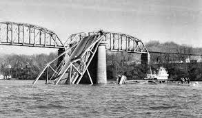

Mothman is a large Moth or bird like cryptid. to the people of point pleasent, west vigina, he is a icon, a large tourist attraction. bringing people from all over to see the famouse mothman museum, and statue. mothman is commonly called the moth of point pleasent. he has multipke books, and even movies writton about him. it seems everyone has their own theory of how the mothman came to be, or what he is.
the silver gate bridge is often blammed on mothman. locals call the oth man a omen of bad luck, or even death. they thing of his apperence as a cautionary warning for the future. and yet the famous moth has brought so muh fortune to point pleasent. in the form of thousands of dollars from tourists and travelers, coming to see the imfomous mothman pizzaria, or mothman meuseum. this town continues to profit in so many ways thanks to this cryptid.